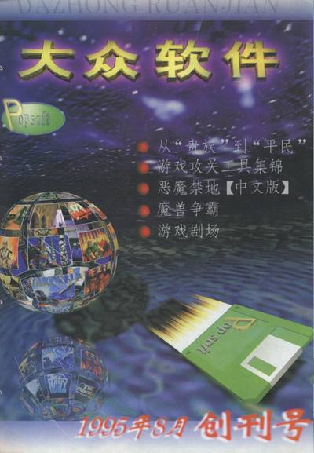
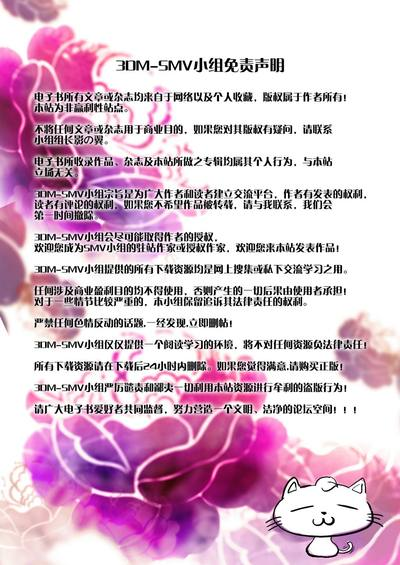
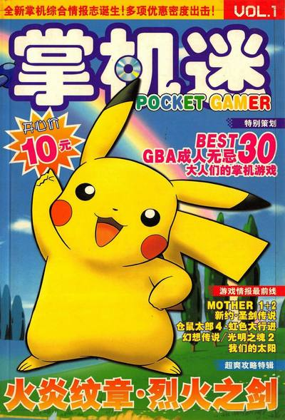
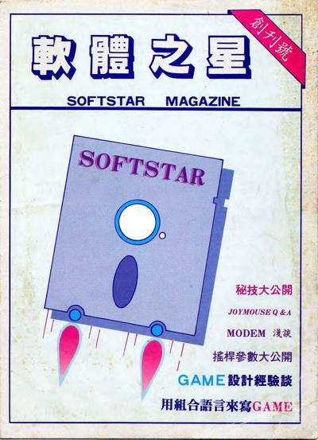

杂志百科
《軟體世界》是智冠科技過去所發行的 PC-Game 專業月刊。曾經每月發行約五萬本。其廣告內容，主要為智冠科技所經銷之各式 PC-Game。雜誌內容一度由單機版 PC-Game 轉型為報導線上遊戲的內容。
「軟體世界」（SoftWorld）亦為智冠科技早期所經銷之各式單機版 PC-Game 的產品系列識別代號，亦即台灣在尚未進入付版權費給原始著作權人的時代，智冠科技與精訊資訊聯手在台灣販賣平價版的遊戲系列。
簡史
- 1989年4月，《軟體世界》雜誌於台灣創刊發行。
- 1995年7月，软体世界杂志改版，并开始在每一期杂志中加赠附有电脑游戏试玩版的CD片，同时全球发行量提高到6万本。
- 1998年12月，在台灣取得「軟體世界」使用於第十六類書籍、雜誌等之商標。
- 1999年9月，發行《軟體世界》國際中文版。（第一次正式賣到其他地區）
- 2001年，《軟體世界》期號滿150之後，從1開始計算新版雜誌的期號。
- 2005年，《軟體世界》停刊（期號200）。
- 2006年，《軟體世界》復刊，以季刊方式刊登一期後還是不敵線上遊戲雜誌，終究還是停刊。
外部連結
- 「軟體世界雜誌」改版重新登場（互联网档案馆存档）2001-11-05
- 港都消費／軟體世界雜誌變裝 呈現另類手法 2001/11/07
- 「軟體世界」雜誌官網存檔〈1998～2003年〉
本節內容整理自维基百科条目 「軟體世界」， 依 CC BY-SA 4.0 许可使用。
编年
- 1987.08智冠科技发行《軟體世界追蹤》第二號（目前所见最早的一期，1987-08-25）。
- 1988《軟體世界追蹤報導》第 1–5 号（本收藏另存杂志创刊号的另版扫描一册）。
- 1989.03《軟體世界》试刊号；4 月正式创刊，月刊。
- 1995.07杂志改版，每期附赠电脑游戏试玩 CD，全球发行量提高到 6 万本。
- 1998.12取得「軟體世界」书籍杂志类商标。
- 1999.09发行《軟體世界》国际中文版。
- 2001.11杂志改版重新登場。
- 2004.10官方宣布休刊，其后短暂恢复发行。
- 2005.12第 200 期（纪念号）后停刊。
- 2006复刊改以季刊发行，第 201 期后终刊。
姐妹馆藏

大众软件1995–2016 · 518 册
电子游戏软件1994–2009 · 282 册 家用电脑与游戏机1994–2003 · 86 册 电子游戏与电脑游戏1996–2003 · 98 册 游戏机实用技术2004–2019 · 154 册
掌机迷2003–2011 · 134 册 游戏日2002–2008 · 85 册
軟體之星1989–1997 · 32 册 掌机王UCG 副刊 · 9 册 口袋迷部分收藏 · 9 册以上馆藏扫描文件均由 archive.org 托管，全部提供在线阅读。
馆藏目录
目录加载中……